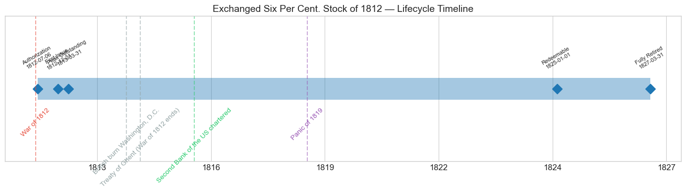
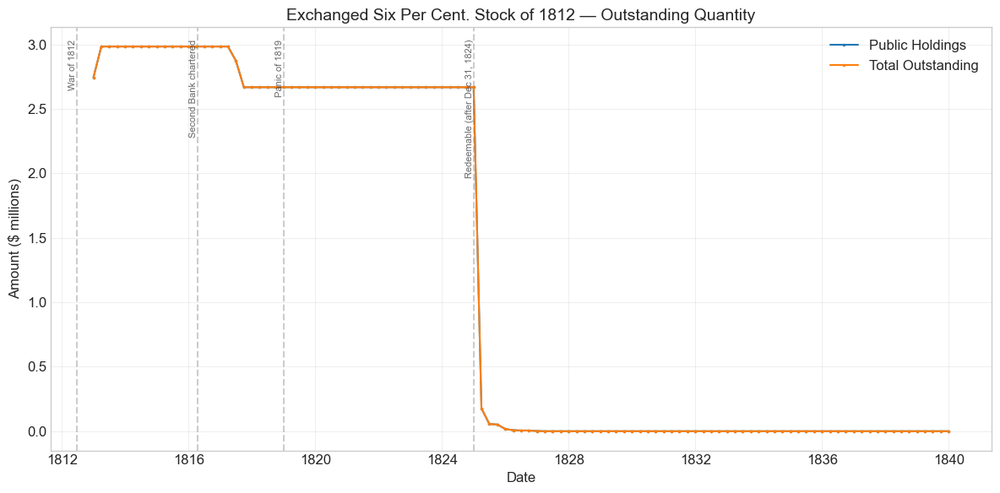
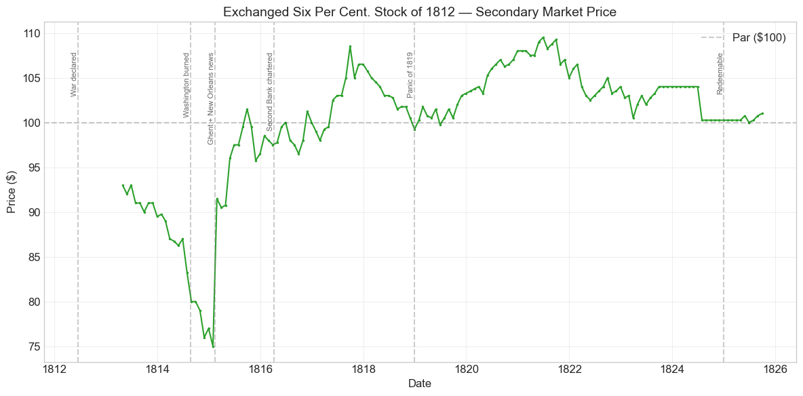
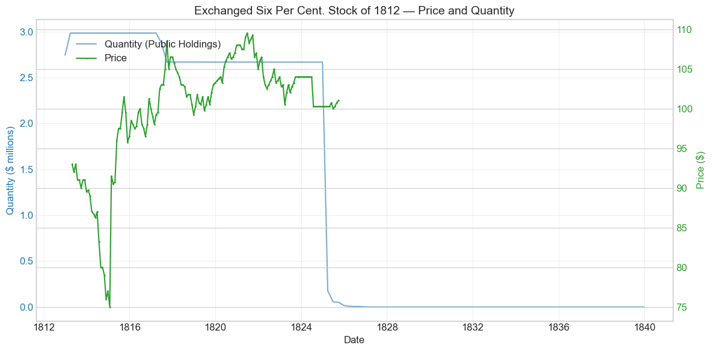
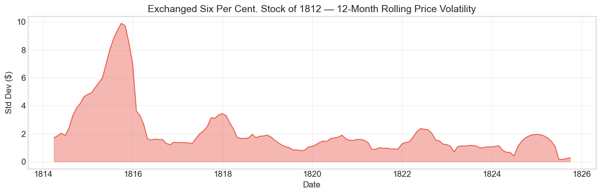

Bond Biography: Exchanged Six Per Cent. Stock of 1812#
The Second Exchange: Re-Papering Hamilton’s Sixes Under Fire#
An enhanced chapter from the Hall-Payne-Sargent US Federal Bond Database (2,857 issues, 1776–1960)
Bond ID (L1): 20051 | Category: Interest Bearing > Marketable > Long Term Bond
Data note. The database records one price series for three loans: this stock, the Six Per Cent. Loan of 1812 (ID 20048) and the Sixteen Million Loan of 1813 (ID 20052). This stock’s prices equal those of the 1812 loan in all 150 months (April 1813–September 1825) and those of the 1813 loan in 130 of 149 overlapping months (they differ only in May–September 1813 and July 1824–September 1825). Comparisons among these bonds carry no information. Prices from August 1814 to February 1817 are quoted in the paper of banks that had suspended specie payments.
import pandas as pd
import numpy as np
import matplotlib.pyplot as plt
import matplotlib.patches as mpatches
import datetime
import warnings
warnings.filterwarnings('ignore')
plt.style.use('seaborn-v0_8-whitegrid')
plt.rcParams.update({'figure.figsize': (12, 6), 'font.size': 12,
'axes.titlesize': 14, 'axes.labelsize': 12})
# Load the bond database
store = pd.HDFStore('../data/BondDF.h5', mode='r')
BondList = store['BondList']
BondQuant = store['BondQuant']
BondPrice = store['BondPrice']
store.close()
BondQuant_T = BondQuant.transpose()
BondPrice_T = BondPrice.transpose()
bond_id = 20051
print(f'Loaded data for: Exchanged Six Per Cent. Stock of 1812 (ID: 20051)')
/Users/thomassargent/anaconda3/lib/python3.9/site-packages/pandas/core/arrays/masked.py:60: UserWarning: Pandas requires version '1.3.6' or newer of 'bottleneck' (version '1.3.5' currently installed).
from pandas.core import (
Loaded data for: Exchanged Six Per Cent. Stock of 1812 (ID: 20051)
Overview#
The Exchanged Six Per Cent. Stock of 1812 was authorized under the Act of July 6, 1812. It was first issued on December 31, 1812 with a coupon rate of 6.0%, payable quarterly in coin. During its lifetime on the secondary market, the bond’s average price was $99.96, ranging from $75.00 to $109.50 (150 monthly observations from April 1813 to September 1825). Peak outstanding reached $2.98 million on March 31, 1813.
This bond is the sequel to the Exchanged Six Per Cent. Stock of 1807 (ID 20045), and the two chapters should be read together. The 1807 operation, Albert Gallatin’s first exercise in deliberate liability management, had invited holders of the old Six Per Cent and Deferred Six Per Cent Stocks of 1790 (IDs 20021 and 20022) to swap into new stock free of the Funding Act’s redemption straitjacket — the famous pledge that no more than $8 per $100, interest and principal combined, would be paid in any year. Take-up in 1807 was partial; millions of the old stock remained in its original form when, on June 18, 1812, the United States declared war on Great Britain.
Eighteen days later, in the first fiscal season of the war, Congress passed the Act of July 6, 1812, renewing the exchange offer. The mechanics were the same as in 1807 — old 6% and deferred stock surrendered at par, dollar for dollar, for new 6% stock, with no cash raised and no new debt created — but the context, and one crucial contract term, had changed entirely. The 1807 exchanged stock had been redeemable at the government’s pleasure, and the Treasury had used that freedom to extinguish it within four years. The 1812 exchanged stock, by contrast, carried a twelve-year term: as the database records, it was not redeemable before December 31, 1824. In 1807 the government had bought back the right to redeem fast; in 1812, with the Treasury suddenly desperate for every wartime dollar, what it wanted was the right — in effect — to stop redeeming for a while. The old stocks’ annual reimbursement, a vested routine of the sinking fund since the 1790s, obliged the Treasury to keep handing principal back to holders at par at the very moment it was borrowing new money at deepening discounts. Every dollar of old stock exchanged converted a compulsory wartime amortization schedule into a single postwar bullet, due at the government’s convenience after 1824.
That is what makes this small issue — never even $3 million — worth a chapter. It is the wartime mirror image of the 1807 operation, the closing act of the long campaign to re-contract Hamilton’s funded debt, and, unlike its 1807 predecessor, it left a price record: 150 monthly quotations that track federal credit down to $75 in the darkest month of the war and up to $109.50 in the postwar calm.
Historical Context#
The following major events occurred during this bond’s lifetime:
Date |
Event |
Category |
|---|---|---|
1812-06-18 to 1815-02-18 |
War of 1812 |
War |
1814-08-24 |
British burn Washington, D.C. |
Other |
1814-12-24 |
Treaty of Ghent (War of 1812 ends) |
Other |
1816-04-10 |
Second Bank of the US chartered |
Legislation |
1819-01-01 to 1821-12-31 |
Panic of 1819 |
Crisis |
Tendering in Wartime#
To see what the 1812 exchange meant to the people on both sides of it, compare it with 1807. Gallatin’s first offer was made in peacetime, from strength: customs revenue was pouring in, the Treasury was retiring debt as fast as the old contracts allowed, and the exchanged stock of 1807 was reimbursed at par almost immediately. A holder tendering in 1807 was accepting an earlier exit at 100. A holder tendering in 1812–13 was doing nearly the opposite. The government was visibly straining — the Six Per Cent. Loan of 1812 (ID 20048) had fallen short even at par, and by early 1813 the Treasury was preparing to sell the Sixteen Million Loan (ID 20052) to a private syndicate at $88 per $100. Exchanging meant giving up the old stock’s scheduled reimbursement — annual slices of principal returned at par, a schedule that would have run through the late 1810s and beyond — in return for a claim on which no principal at all need be paid until 1825. In exchange, the tendering holder received something the 1807 stock had never offered: a full 6% coupon on full principal, guaranteed against redemption for twelve years. For an investor who wanted income rather than early repayment — the annuity preference that had always characterized part of the old sixes’ clientele — that was a genuine, if modest, inducement. For the Treasury, every dollar tendered was a dollar of wartime amortization it no longer had to find. Take-up, at just under $3 million, was correspondingly modest: enough to matter to a hard-pressed Treasury, far from universal.
The War of 1812 and the Price of Federal Credit#
The war dominates the price record. The first quotation in the database, $93.00 in April 1813, already carries a wartime discount: the market that had just absorbed the Sixteen Million Loan at 88 was not going to price an identical 6% claim at par. From there the stock slid with the government’s fortunes — through the failed campaigns and the tightening British blockade of 1813, which strangled the customs revenues on which debt service depended, down to the high $70s after the burning of Washington on August 24, 1814, and to its low of $75.00 in January 1815. Two caveats, common to all the War of 1812 chapters in this book, apply to these figures. Quotations were thin and regional, and could gap or go stale. And after banks outside New England suspended specie payments in August–September 1814, prices were quoted in depreciated local bank paper, so the recorded 1814–15 lows, grim as they are, if anything understate the collapse in the specie value of federal debt.
The recovery was as sharp as the fall: news of the Treaty of Ghent (signed December 24, 1814) and of Jackson’s victory at New Orleans reached the seaboard cities in early-to-mid February 1815, and the price jumped +22% in a single month, from $75.00 to $91.50 — the identical spike that appears in the Six Per Cent. Loan of 1812 and the Sixteen Million Loan of 1813. The spike is identical because the database carries one price series for the three loans (see the data note at the top of this chapter).
The Panic of 1819: The Dog That Did Not Bark#
America’s first great financial crisis passed through this bond’s price series almost without a trace: through 1819–1821 the stock held between roughly $99 and $109, rising as the panic deepened. The crisis destroyed banks, merchants, and land speculators; it did not shake federal credit. If anything, the flight from private paper into the safest available claims — together with the fall in market interest rates to around 5% in the early 1820s — is what carried this 6% stock to its premium peak of $109.50 in June 1821.
# Bond Lifecycle Timeline
fig, ax = plt.subplots(figsize=(14, 4))
# Key dates
dates = [('Authorization', '1812-07-06'), ('First Issue', '1812-12-31'), ('Peak Outstanding', '1813-03-31'), ('Redeemable', '1825-01-01'), ('Fully Retired', '1827-03-31')]
events = [('War of 1812', '1812-06-18', 'war'), ('British burn Washington, D.C.', '1814-08-24', 'other'), ('Treaty of Ghent (War of 1812 ends)', '1814-12-24', 'other'), ('Second Bank of the US chartered', '1816-04-10', 'legislation'), ('Panic of 1819', '1819-01-01', 'crisis')]
import matplotlib.dates as mdates
from datetime import datetime
# Plot bond lifetime bar
d0 = datetime.strptime(dates[0][1], '%Y-%m-%d')
d1 = datetime.strptime(dates[-1][1], '%Y-%m-%d')
ax.barh(0, (d1 - d0).days, left=mdates.date2num(d0), height=0.3,
color='#1f77b4', alpha=0.4, label='Bond Lifetime')
# Mark key dates
for label, date_str in dates:
d = datetime.strptime(date_str, '%Y-%m-%d')
ax.plot(mdates.date2num(d), 0, 'D', color='#1f77b4', markersize=10)
ax.annotate(f'{label}\n{date_str}', (mdates.date2num(d), 0.25),
ha='center', va='bottom', fontsize=8, rotation=30)
# Mark historical events
colors = {'war': '#e74c3c', 'crisis': '#9b59b6', 'legislation': '#2ecc71', 'other': '#95a5a6', 'monetary': '#f39c12'}
for name, date_str, cat in events:
d = datetime.strptime(date_str, '%Y-%m-%d')
ax.axvline(mdates.date2num(d), color=colors.get(cat, 'gray'), alpha=0.5, linestyle='--')
ax.annotate(name, (mdates.date2num(d), -0.25), ha='center', va='top',
fontsize=10, rotation=45, color=colors.get(cat, 'gray'))
ax.set_yticks([])
ax.xaxis.set_major_formatter(mdates.DateFormatter('%Y'))
ax.set_title('Exchanged Six Per Cent. Stock of 1812 — Lifecycle Timeline')
ax.set_ylim(-1, 1)
plt.tight_layout()
plt.show()

Bond Features#
Feature |
Detail |
|---|---|
Name |
Exchanged Six Per Cent. Stock of 1812 |
Authorizing Act |
July 6, 1812 |
First Issue Date |
December 31, 1812 |
Term |
12 years |
Redemption |
Not reimbursable before December 31, 1824 (per the database’s “Redeemable After Date”); redeemed 1825–1827 |
Coupon Rate |
6.0% per annum |
Payment Frequency |
Quarterly (4 times/year) |
Payable in Coin |
Yes |
Origin |
Issued at par in voluntary exchange for old Six Per Cent and Deferred Six Per Cent Stock of 1790 |
Peak Outstanding |
$2.98 million (March 31, 1813) |
The comparison that matters is a three-way one. The parent stocks of 1790 were redeemable only slowly — no more than $8 per $100 per year, principal and interest combined. The 1807 exchanged stock was redeemable at the government’s pleasure, immediately. The 1812 exchanged stock sits between the two: redemption was deferred for twelve years, then free. Each contract fitted its moment — Hamilton in 1790 buying credibility with a promise not to redeem quickly; Gallatin in 1807 buying back the right to redeem at will; the wartime Treasury of 1812 buying relief from a redemption schedule it could no longer comfortably afford, at the price of a twelve-year moratorium on redeeming at all. As with its 1807 predecessor, the “Price Sold” of 1.0 in the database records an exchange at face value, not a cash sale: this bond raised no money.
# Display full bond features from database
row = BondList.loc[20051]
display_cols = [
"Treasury's Name Of Issue", 'Authorizing Act', 'Term Of Loan',
'First Issue Date', 'Redeemable After Date',
'Coupon Rate', 'Coupons Per Year', 'Callable', 'Coin',
'Authorized Amount', 'Price Sold'
]
print('Bond Features from Database:')
print('=' * 55)
for col in display_cols:
if col in row.index:
print(f' {col:<30} {row[col]}')
Bond Features from Database:
=======================================================
Treasury's Name Of Issue Exchanged Six Per Cent. Stock of 1812
Authorizing Act July 6, 1812
Term Of Loan 12 years
First Issue Date 1812-12-31 00:00:00
Redeemable After Date 1824-12-31 00:00:00
Coupon Rate 6.0
Coupons Per Year 4.0
Callable 0.0
Coin 1.0
Authorized Amount nan
Price Sold 1.0
Bond Quantity Over Time#
The bond’s outstanding quantity peaked at $2.98 million on March 31, 1813. Quantity data span December 1812 to the end of the 1830s (109 quarterly observations, the last dozen years of which are zeros). The series has none of a war loan’s drama — no installment ramp, no refinancing — because this was not a war loan: it is the flat, patient profile of old debt re-papered and parked until the contract allowed it to be paid off.
# Bond quantity over time
fig, ax = plt.subplots(figsize=(12, 6))
for stype in ['Public Holdings', 'Total Outstanding']:
try:
s = BondQuant_T.loc[(20051, stype)]
s = s[s.notna()]
if len(s) > 0:
ax.plot(s.index, s.values / 1e6, marker='.', markersize=3, linewidth=1.5, label=stype)
except KeyError:
pass
ax.set_title('Exchanged Six Per Cent. Stock of 1812 — Outstanding Quantity')
ax.set_xlabel('Date')
ax.set_ylabel('Amount ($ millions)')
ax.legend()
ax.grid(True, alpha=0.3)
events = {'1812-06-18': 'War of 1812', '1816-04-10': 'Second Bank chartered', '1819-01-01': 'Panic of 1819', '1825-01-01': 'Redeemable (after Dec 31, 1824)'}
for date_str, label in events.items():
d = pd.Timestamp(date_str)
ax.axvline(d, color='gray', alpha=0.4, linestyle='--')
ax.text(d, ax.get_ylim()[1]*0.97, label, rotation=90, va='top', ha='right', fontsize=8, alpha=0.7)
plt.tight_layout()
plt.show()

Quantity Analysis: A Shelf of Debt, Built Fast and Cleared on Schedule#
The series divides into four phases, each legible against the contract:
Subscription, 1812–1813. The stock appears at $2.75 million on December 31, 1812 and reaches its peak of $2,984,747 by March 31, 1813 — and then stops growing. As in 1807, these opening steps are administrative, not market events: holders of old 6% and deferred stock presenting certificates at the Treasury and the loan offices, old stock cancelled, new stock entered on the books at par. The roughly six-month lag between the July 1812 act and the first recorded issue mirrors the 1807 experience — the machinery of notice, subscription, and transfer. The total then sat unchanged: the act kept the subscription books open only from October 1, 1812 to March 17, 1813. Just under $3 million tendered — against roughly $6 million in 1807, made in far easier times — measures how much less attractive the offer looked from inside a war.
The wartime and postwar plateau, 1813–1824. For a dozen years the quantity line is nearly flat. The only movements are two modest reductions in 1817 — from $2.98 million to $2.87 million at mid-year and to $2.67 million by September — about $316,000 in all. The stock was not redeemable until after 1824, so these cannot be reimbursements at the Treasury’s initiative; they most plausibly record purchases or surrenders through the sinking-fund machinery during 1817, when large postwar surpluses set off an aggressive general campaign of debt reduction. The database does not identify the mechanism, and we do not press the point. From late 1817 to the end of 1824 the outstanding amount is frozen at $2.669 million — the twelve-year deferral doing exactly what it promised, to both sides.
Redemption, 1825–1827. The moment the contract permitted, the Treasury moved. Between December 1824 and March 1825 the outstanding stock collapses from $2.669 million to $178,000 — a redemption of over 93% in a single quarter. The residue was ground down through 1825 and 1826 ($56,000 by mid-1825, $17,000 by year-end, $1,500 by the close of 1826) and reaches zero by March 1827. The mid-1820s were the heyday of the postwar sinking fund — the years in which the war debt of 1812–1815 was being swept off the books wholesale on its way to the total extinction of the federal debt in 1835 — and this issue, small and callable at last, was an early and easy target.
The long zero. The database carries the series at zero through 1839; unlike the 1807 exchanged stock, no lingering tail of unclaimed balances is recorded. There was no refinancing into other instruments: the stock was paid off in coin, extinguishing the claims outright.
Secondary Market Prices#
Overall Statistics (1813-04-30 to 1825-09-30): Mean $99.96, Range $75.00–$109.50, Std Dev $6.96, 150 observations.
By Period:
Period |
Mean |
Std |
Min |
Max |
Obs |
|---|---|---|---|---|---|
Wartime (1813-04 to 1815-01) |
$86.25 |
$5.84 |
$75.00 |
$93.00 |
22 |
Peace to redemption (1815-02 to 1825-09) |
$102.32 |
$3.61 |
$90.50 |
$109.50 |
128 |
Where its 1807 predecessor left no price record at all, the 1812 exchanged stock left an unusually clean one, and it tells a complete story in three acts:
Act I — the wartime discount (1813–1815). The series opens at $93.00 in April 1813 and never sees par during the war. The stock sagged to $89–91 through late 1813, slid through the $80s in 1814 as the blockade tightened and the Treasury’s condition worsened, dropped to $80 in the weeks around the burning of Washington, and bottomed at $75.00 in January 1815 — the same $75 floor recorded for the Sixteen Million Loan of 1813 in the same month. The maximum drawdown, -19.4% from the April 1813 start, understates the true collapse only because the series begins at a discount: measured against the par at which tendering holders had surrendered their old stock, and remembering that the 1814–15 quotations were made in depreciated suspended-bank paper, the wartime loss ran deeper than the headline number.
Act II — peace and premium (1815–1821). The +22% peace spike of February 1815 took the stock to $91.50; it crossed par by September 1815, wobbled near 96–101 through 1816, and then climbed decisively as specie payments resumed (February 1817) and the Second Bank of the United States opened: $108.50 by September 1817. After a mild easing in 1818 and an untroubled passage through the Panic of 1819, the premium widened again as postwar interest rates fell toward 5%, peaking at $109.50 in June 1821. A 6% coupon guaranteed until 1825 was simply worth more than par in a 5% world — the twelve-year redemption deferral, granted as a wartime sweetener, had become a valuable shield for its holders.
Act III — the pull to par (1822–1825). From 1822 the premium eroded as the redemption horizon approached: $103–106 in 1822, $100–104 in 1823, then a long flat shelf — $104.00 for nine straight months to mid-1824, and $100.25 from July 1824 through the redemption year. Those unnaturally repeated figures should be read as thin, stale, or administered quotations for a security everyone knew would shortly be paid off at 100: with redemption after December 31, 1824 a certainty, the market price could be nothing but par plus a sliver of accrued interest. The series ends in September 1825, alongside the redemption itself — textbook pull-to-par, in one of its earliest American exhibits.
# Annotated price chart
fig, ax = plt.subplots(figsize=(12, 6))
s = BondPrice_T.loc[(20051, 'Average')]
s = pd.to_numeric(s, errors='coerce').dropna()
if len(s) > 0:
ax.plot(s.index, s.values, marker='.', markersize=3, linewidth=1.5, color='#2ca02c')
ax.axhline(100, color='black', alpha=0.2, linestyle='--', label='Par ($100)')
ax.set_title('Exchanged Six Per Cent. Stock of 1812 — Secondary Market Price')
ax.set_xlabel('Date')
ax.set_ylabel('Price ($)')
ax.legend()
ax.grid(True, alpha=0.3)
events = {'1812-06-18': 'War declared', '1814-08-24': 'Washington burned',
'1815-02-14': 'Ghent + New Orleans news', '1816-04-10': 'Second Bank chartered',
'1819-01-01': 'Panic of 1819', '1825-01-01': 'Redeemable'}
for date_str, label in events.items():
d = pd.Timestamp(date_str)
ax.axvline(d, color='gray', alpha=0.4, linestyle='--')
ax.text(d, ax.get_ylim()[1]*0.97, label, rotation=90, va='top', ha='right', fontsize=8, alpha=0.7)
plt.tight_layout()
plt.show()

# Price and Quantity — dual-axis chart
fig, ax1 = plt.subplots(figsize=(12, 6))
# Quantity (left axis)
for stype in ['Public Holdings', 'Total Outstanding']:
try:
q = BondQuant_T.loc[(20051, stype)]
q = q[q.notna()]
if len(q) > 0:
ax1.plot(q.index, q.values / 1e6, color='#1f77b4', alpha=0.6, label=f'Quantity ({stype})')
break
except KeyError:
pass
ax1.set_xlabel('Date')
ax1.set_ylabel('Quantity ($ millions)', color='#1f77b4')
ax1.tick_params(axis='y', labelcolor='#1f77b4')
# Price (right axis)
ax2 = ax1.twinx()
p = BondPrice_T.loc[(20051, 'Average')]
p = pd.to_numeric(p, errors='coerce').dropna()
if len(p) > 0:
ax2.plot(p.index, p.values, color='#2ca02c', marker='.', markersize=2, label='Price')
ax2.set_ylabel('Price ($)', color='#2ca02c')
ax2.tick_params(axis='y', labelcolor='#2ca02c')
ax1.set_title('Exchanged Six Per Cent. Stock of 1812 — Price and Quantity')
ax1.grid(True, alpha=0.3)
fig.legend(loc='upper left', bbox_to_anchor=(0.1, 0.9))
plt.tight_layout()
plt.show()

Detected Price/Quantity Events#
The following significant movements were auto-detected:
Date |
Type |
Change |
Nearest Historical Event |
|---|---|---|---|
1815-02 |
price_spike |
+22.0% |
War of 1812 |
1815-05 |
price_spike |
+5.8% |
War of 1812 |
1825-03 |
quantity_decrease |
-93.3% |
None identified |
1825-06 |
quantity_decrease |
-68.5% |
None identified |
1825-12 |
quantity_decrease |
-67.8% |
None identified |
1826-03 |
quantity_decrease |
-51.4% |
None identified |
1826-06 |
quantity_decrease |
-32.9% |
None identified |
1826-12 |
quantity_decrease |
-73.1% |
None identified |
1827-03 |
quantity_decrease |
-100.0% |
None identified |
The causal reading is straightforward once the contract is in view:
Price spike, February 1815 (+22.0%). The peace bounce. News of the Treaty of Ghent (signed December 24, 1814) and of Jackson’s victory at New Orleans (January 8, 1815) reached the seaboard cities in early-to-mid February 1815. The price jumped from its all-time low of $75.00 to $91.50 in a single month as the twin threats of military defeat and Treasury default evaporated together. The identical +22% spike appears in the Six Per Cent. Loan of 1812 and the Sixteen Million Loan of 1813, because the database carries one price series for all three.
Price spike, May 1815 (+5.8%). Continuation of the recovery as the blockade lifted, trade resumed, and the flood of postwar imports promised the customs revenue needed to service the debt. The stock crossed par by September 1815.
Quantity decreases, 1825–1827. These are not mysteries but the contract executing. The stock became redeemable after December 31, 1824; the Treasury, then running the large surpluses that were extinguishing the whole war debt, retired over 93% of it in the first quarter of 1825 and mopped up the remainder in shrinking tranches — the large percentage drops of 1825–27 apply to an ever-smaller base, with the final few hundred dollars cleared by March 1827. The “None identified” labels simply reflect that the operative event was written into the bond’s own terms twelve years earlier, not into the general chronology.
Price Volatility#
Maximum drawdown: -19.4% (from the first quotation of $93.00 on April 30, 1813 to the trough of $75.00 on January 31, 1815)
Average monthly return: 0.079%
The volatility profile is entirely front-loaded: the rolling standard deviation peaks in the window spanning the 1814 collapse and the violent 1815 recovery, then decays through the late 1810s to almost nothing. By 1823–25 the price barely moves at all — partly genuine stability, partly the stale par-anchored quotations of a bond awaiting certain redemption. The chart below shows the 12-month rolling standard deviation of prices.
# Rolling volatility (12-month window)
p = BondPrice_T.loc[(20051, 'Average')]
p = pd.to_numeric(p, errors='coerce').dropna()
if len(p) >= 12:
rolling_std = p.rolling(window=12).std().dropna()
fig, ax = plt.subplots(figsize=(12, 4))
ax.fill_between(rolling_std.index, rolling_std.values, alpha=0.4, color='#e74c3c')
ax.plot(rolling_std.index, rolling_std.values, color='#e74c3c', linewidth=1)
ax.set_title('Exchanged Six Per Cent. Stock of 1812 — 12-Month Rolling Price Volatility')
ax.set_xlabel('Date')
ax.set_ylabel('Std Dev ($)')
ax.grid(True, alpha=0.3)
plt.tight_layout()
plt.show()
else:
print('Insufficient data for rolling volatility (need >= 12 observations)')

Issuance, Distribution, and Redemption#
How it was placed. There was no sale, no underwriter, and no offering price. As in 1807, the “Price Sold” of 1.0 records an exchange at face value: a holder of old Six Per Cent or Deferred stock presented certificates, the old stock was cancelled on the books of the Treasury or a loan office, and new exchanged stock for the same principal was entered in its place. Issuance was demand-driven — $2.75 million on the books by the end of December 1812, the final $0.24 million by March 1813, and nothing thereafter.
Who held it. By construction, the initial holders were a self-selected subset of the old stock’s owners — banks, insurance companies, trustees, merchants, and individual investors, domestic and foreign, who preferred a guaranteed twelve-year 6% income stream to the old stock’s continuing dribble of principal repayments. The database does not record the composition of tendering holders, and we do not guess at it beyond that logic; but it is worth noting that whoever tendered in 1812–13 was, in effect, expressing confidence that the United States would still be paying its coupons in 1825. The wartime price record shows what the market charged for that confidence.
How it ended. In coin, at par, and on the first date the contract allowed. The Treasury redeemed over 93% of the stock in the first quarter of 1825, immediately after the December 31, 1824 deferral expired, and cleared the residue in tranches through March 1827 — one small operation within the great postwar liquidation that carried the federal debt from its 1816 peak of about $127 million to zero in January 1835. Apart from roughly $316,000 that left the books in 1817 (most plausibly via sinking-fund purchases or surrenders; the database does not specify), the entire issue simply waited out its twelve years and was then extinguished. Nothing was refinanced into other instruments.
Implications and Legacy#
The completion of the first liability-management program. Read as a pair, the exchanges of 1807 and 1812 are the two halves of a single project: unwinding the redemption covenant Hamilton had written into the Funding Act of 1790. The 1807 operation, made from fiscal strength, converted $6 million of the old sixes into stock redeemable at pleasure and extinguished it within four years. The 1812 operation, made under fiscal duress, converted a further $3 million into stock the Treasury would not have to touch until the war and its debts were digested. Between them — together with the ordinary grind of the $8-per-$100 reimbursement on the balance — they closed out the contractual architecture of 1790. The technique they share, a voluntary swap that alters redemption terms while leaving the coupon untouched, is the ancestor of every subsequent Treasury exchange offer, from the refundings of the 1870s to the Liberty Loan conversions of 1917–18.
A demonstration that debt management continues in wartime. The loans of 1812–1814 show the Treasury raising money on worsening terms; this small issue shows it simultaneously managing the shape of its existing obligations. Deferring the amortization of the old funded debt while borrowing new money at 88 was elementary cash-flow triage — the government stopped, in effect, paying off cheap old debt at par with the proceeds of expensive new debt. That both operations ran through the same offices in the same months is an early instance of a distinction modern treasuries take for granted: financing the deficit and managing the debt are different jobs.
What the price record can and cannot show. This stock was economically close to the wartime 6% loans — same coupon, same coin, same credit — and the database assigns it the 1812 loan’s price series month for month. The record therefore cannot test whether provenance carried a premium. Its final two years, flat at $100.25 while awaiting a certain redemption, are as clean an exhibit of pull-to-par as the early American record affords. Where quotations repeat unchanged for months, we read thin trading and stale or administered quotes, not market events.
A footnote with a long shadow. When the last of this stock was redeemed in March 1827, the securities created by the Funding Act of 1790 had effectively passed from the marketable debt (only the 3% stock of 1790 lingered, until the early 1830s). Eight years later the United States owed nothing at all — the only major nation ever to extinguish its national debt. The Exchanged Six Per Cent. Stock of 1812 was among the quietest instruments in that story: it raised no money, fought no battles, and never strayed far from the pack in price. But it carried Hamilton’s sixes through their last passage — under blockade, through a burned capital, past a suspension and a panic — and delivered them, at par and in coin, to their appointed end.
References#
Primary Sources#
U.S. Congress, Act of July 6, 1812 (authorizing the exchange of old six per cent and deferred stock for new six per cent stock, reimbursement deferred until after December 31, 1824).
U.S. Congress, Act of February 11, 1807 (the predecessor exchange; see the chapter on ID 20045).
U.S. Congress, An Act making provision for the (payment of the) Debt of the United States (the Funding Act), August 4, 1790, 1 Stat. 138 (source of the $8-per-$100 redemption limitation on the parent stocks).
Gallatin, A., and successors, annual reports of the Secretary of the Treasury and reports of the Commissioners of the Sinking Fund, 1801–1830s.
Scholarly Works#
Hall, G. J. & Sargent, T. J. (2014). “Fiscal Discriminations in Three Wars.” Journal of Monetary Economics 61: 148–166.
Hall, G. J. & Sargent, T. J. (2018). “Brief History of US Debt Limits Before 1939.” Proceedings of the National Academy of Sciences 115(12): 2942–2945.
Payne, J., Szőke, B., Hall, G. & Sargent, T. (2025). Quarterly Journal of Economics.
General Histories#
Bayley, R. A. (1881). The National Loans of the United States, From July 4, 1776 to June 30, 1880. Washington: Government Printing Office.
Dewey, D. R. (1918). Financial History of the United States. New York: Longmans, Green and Co.
Studenski, P. & Krooss, H. E. (1952). Financial History of the United States. New York: McGraw-Hill.
Perkins, E. (1994). American Public Finance and Financial Services, 1700–1815. Columbus: Ohio State University Press.
Enhanced Bond Biography generated from the Hall-Payne-Sargent Bond Database. Narrative enrichment draws on Bayley (1881), Dewey (1918), Studenski & Krooss (1952), and Perkins (1994). See the companion chapters on the Six Per Cent Stock of 1790 (ID 20021) and the Deferred Six Per Cent Stock of 1790 (ID 20022) for the parent securities, and on the Exchanged Six Per Cent. Stock of 1807 (ID 20045) for the peacetime predecessor of this operation.